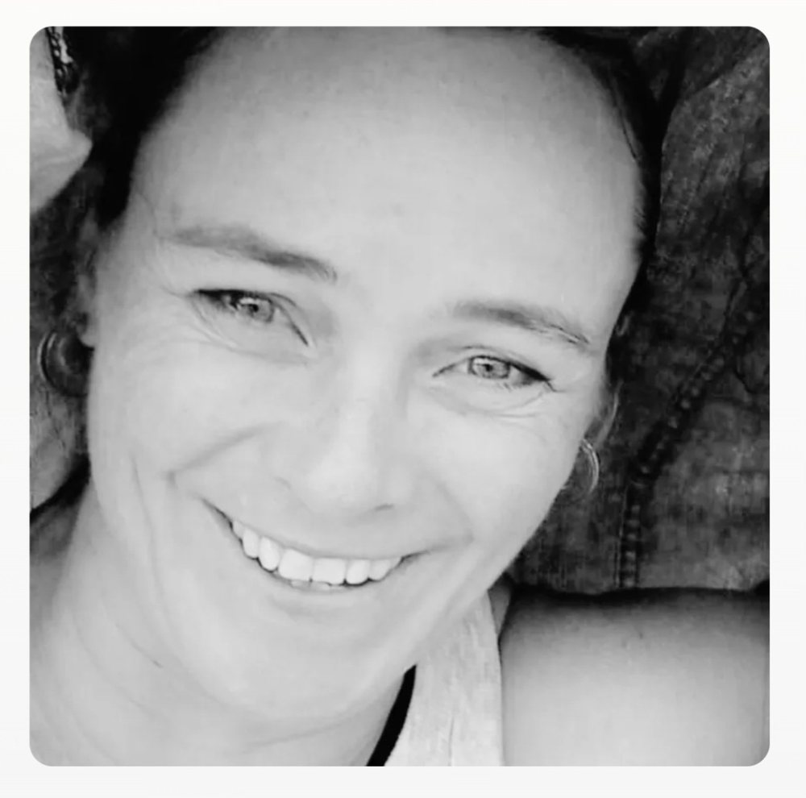

It started with a picture.
I don't remember knowing anything about you yet. I just remember being drawn to you.
The photograph. Clear. Monochrome. Your eyes were bright and seemed to look straight through me, but there was something playful behind them.
Then there was your voicenote.
I remember listening to it and trying to work out how on earth your name was spelled.
Döhne.
A photograph, a voice, and a name I couldn't quite figure out.
Apparently, that was enough to get my attention.
So, being brave and all, I liked the picture.

I said hello; you replied.
Very quickly, my profile was turned into an ad.
You were intrigued by the ad to my life and wanted to know who my target audience was.
Funny thing is, I didn't know you worked in marketing...yet (Dis soos CrossFit, hoe weet jy?).
I also knew very little about advertising, just a handful of phrases floating around somewhere in my brain.
Target audience, demographics, market share — I decided that was enough to build an entire campaign.
Toe werk ek met wat ek het.
The week had been as kind as a vegetarian fox in a henhouse.
The campaign was looking for someone kind, curious, emotionally mature, and who laughed at terrible jokes.
Demographics were flexible.
You laughed and said we might be competing for the same market share.
I figured maybe we weren't competing at all, simply testing brand compatibility.
Ever the overachiever, you took it one step further: brand collaboration.
Two strangers on Hinge had managed to create an advertising campaign for a relationship neither of them knew they were applying for.
The application kept progressing.
Randomly (as things tend to happen in our world), we discovered we both loved Patch Adams.
You'd watched it a hundred times; it still made you cry.
Important discovery: same favourite part — the gynaecology congress.
We both knew exactly why that was funny.
Turns out we were both rather gynaecologically inclined.
You, a baby lesbian.
Me, a lifetime gay.
The campaign was looking very promising.
Conversations moved beyond advertising and into the slightly more useful business of finding out who the other person actually was.
Work. Weekends. Friends. Family.
And then padel.
You suggested we should go play.
It turned out to be significantly more complicated than simply deciding to play.
Singles or doubles? Padel or pickleball? Different courts, different venues — there were a surprising number of variables involved in getting two randos onto a court.
A full menu of possibilities was presented.
Various combinations of padel, pickleball and alternative courts, with the final option being the wonderfully sensible idea that we could simply meet each other for lunch somewhere like normal people.
I opted for a combination of option 3 and option 5.
Which, in retrospect, feels about right.
I refuse to be a normal person, but apparently very willing to compromise.
Somewhere in all of this, we also discovered that we were both Pretoria girls.
Naturally, this required supporting documentation:
PRETORIA GIRL — Desmond and the Tutus
Eventually, there was a court booked at Groenkloof.
We were going to meet.
And I had absolutely no idea that I was about to meet the person who would become YOU.